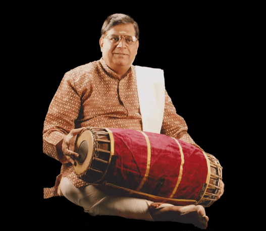
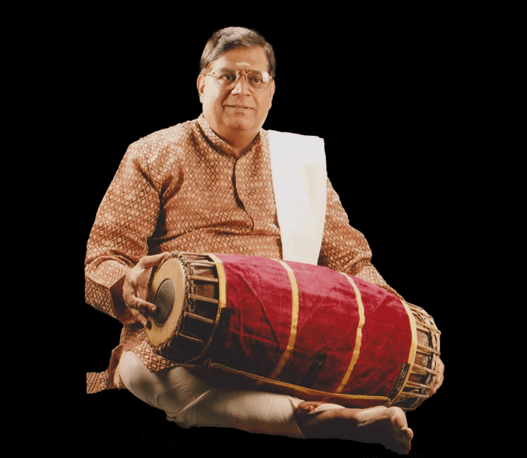
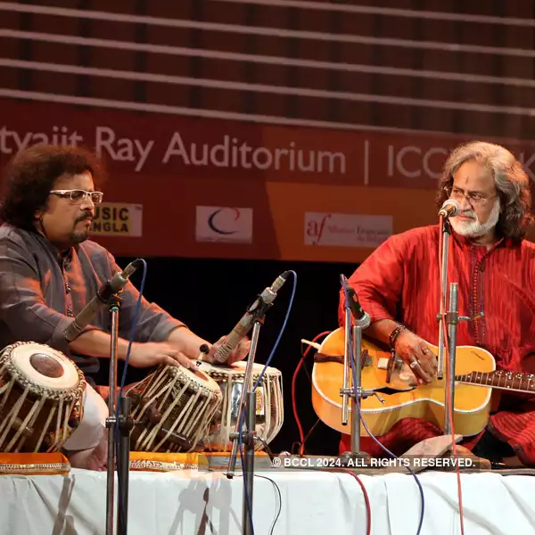
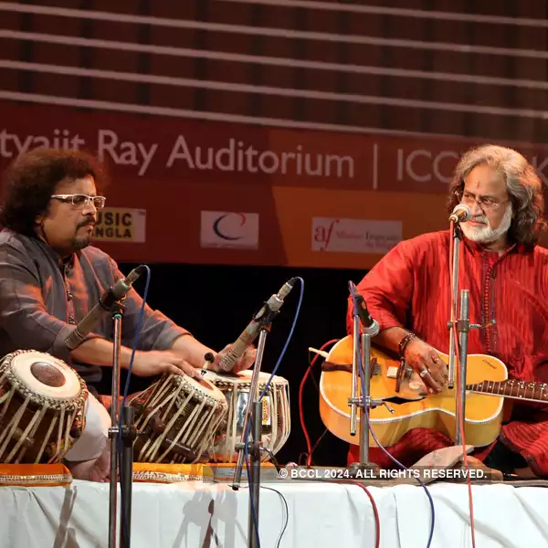

PANDIT S. SEKHAR
SUBJECT
TABLA AND PAKHWAJ

 


 

VIDUSHI SANJUKTA GHOSH
SUBJECT
VOCAL SONG
JAYA SEAL GHOSH
SUBJECT
DANCE

DEBAPRATIM ROY
SUBJECT
INSTRUMENTS
Organising theoretical and theme based academic programmes on Indian art and culture for teachers
and students.
Conducting Workshops to provide practical training and knowledge in crafts to be incorporated in
school curriculum. Various art activities like drama, music, narrative art forms, classical dances, etc. are
organized to create an awareness of the regional variations and richness of cultural expressions of our
country.
Collecting and developing a library of resources in the form of scripts, digital photographs, audio and
video recordings and films with the objective of producing culturally-oriented educational aids to
encourage the art and craft forms of rural India and their revival.
Preparing publications and other audio-visual material which attempt to provide an understanding
and appreciation of the different aspects of Indian art and culture.
Implementing Cultural Talent Hunt Scholarship Scheme for providing facilities to young talented artists
in the 10-20 age group to study one or the other art form.
We are aware of the fact that music, dance and fine arts in the ancient times used to command a place
of pride and prominence due to classical and technical perfection and excellence and that has
associated with the performing and visual arts.
The Indian classical music and dance had been
developed by the ancient sages while worshipping nature and these arts in turn covered the entire
spectrum of emotions and feelings of human beings.
But with the passage of time, stagnation was noticed in the cultural development due to want of
encouragement, interest and patronage. Moreover, cultural activities in the form of dance and drama
ware considered as contemptible and harsh among the people resulting in creation of a colossal void.
The need of the hour is in variably to revive and bolster the ancient, traditional art forms which were
the most important constituents of Indian culture.
GCAC is committed its level best to bear the brunt of continuing in phased manners.
© 2024 GARIA CULTURAL ASSESSMENT CENTRE. All rights reserved.